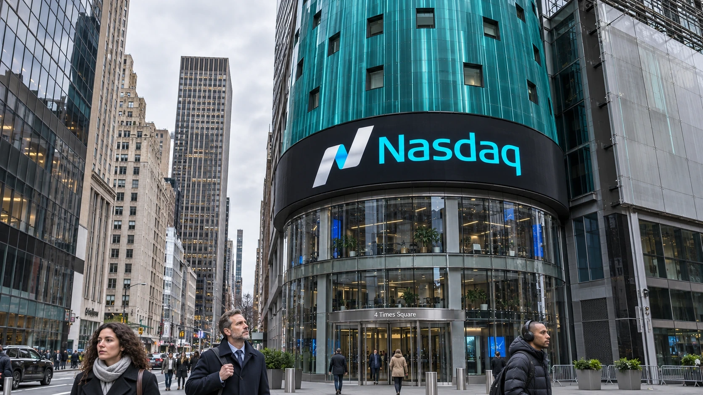

Nasdaq Falls 5.5% as Chip Selloff Tests the AI Buildout Trade
A sharp decline in semiconductor shares drove Wall Street lower on November 5, bringing financing and project-delivery risks back into focus.

U.S. stocks closed sharply lower on November 5, with the Nasdaq Composite falling 5.5% and confirming a correction from its record closing high. The S&P 500 dropped 4.4%, while the Dow Jones Industrial Average lost 3.4%. Semiconductor shares suffered an even steeper decline: the Philadelphia Semiconductor Index fell 12.2%, according to Reuters’ closing market report.
The session put a familiar investment argument under pressure. Demand for artificial intelligence can keep expanding while the shares of companies financing, supplying and operating that infrastructure lose value. Thursday’s selling reflected renewed doubts about the earnings and project assumptions behind the trade, rather than proof that demand for computing had disappeared.
Reuters linked the decline to Qualcomm’s earnings and concerns that Democratic victories in the midterm elections could bring greater scrutiny of data-center expansion. Those concerns describe investors’ interpretation of political risk. An election result does not itself cancel a construction contract, revoke a permit or establish a nationwide restriction on new facilities.
A chipmaker’s results meet a crowded investment theme
Qualcomm shares fell 9.5% on Thursday. Its fiscal fourth-quarter release, issued the previous evening, reported GAAP revenue of $10.322 billion, down 8% from a year earlier. The reporting period ended September 27. Those figures concern Qualcomm’s business, whose exposure extends beyond AI infrastructure, and should not be treated as a direct measure of spending across the entire data-center industry.
The same release showed why the business cannot be reduced to a single declining market. Qualcomm reported its first $2 billion quarter in automotive chip revenue, up 89% from a year earlier. Management also reiterated a $5 billion fiscal 2027 data-center revenue target. That target is a forecast, whereas the automotive and group revenue figures describe completed reporting periods.
For shareholders, the distinction is consequential. A company can produce encouraging results in a new division while weakness elsewhere limits current earnings. Its shares can also fall despite promising technology if the price already assumes a rapid transition to higher profits. The mechanics of an earnings surprise depend on the expectations embedded in the stock, not simply on whether one reported figure increased.
Delivery dates can matter as much as demand
The economic chain behind an AI facility contains several businesses with different payment schedules. A developer must secure a site, power and financing. Equipment suppliers need orders to become shipments. An operator needs completed infrastructure to become usable capacity, then paying workloads. An attractive demand forecast does not eliminate the time between those steps.
As an analytical matter, a delay can change a project’s return without destroying its long-term usefulness. Interest and other committed costs may continue while the date of customer billing moves further away. A fully funded project with firm customer commitments therefore presents a different financial exposure from an expansion dependent on another borrowing round. TTN’s examination of how the AI buildout is financed explains why funding terms belong alongside computing demand in the investment case.
Political uncertainty adds another variable to that timetable. Possible changes to permitting or power policy can raise the range of outcomes a shareholder must consider. But a market reaction is not a substitute for checking the jurisdiction, the project’s existing approvals and the wording of any actual proposal. Treating all projects as equally exposed would miss those distinctions.
Index ownership can multiply the same exposure
For a household holding a broad equity fund, the relevance extends beyond individual chip stocks. Market-capitalization-weighted portfolios give larger companies larger weights. Several holdings can also depend on the same underlying spending cycle even if they occupy different industry classifications. A cloud customer, a semiconductor supplier and a data-center operator are separate businesses, but their expected growth may share a common assumption about AI spending.
That relationship helps explain why diversification requires looking through company names to their sources of revenue and financing. It does not establish that every decline has the same cause. TTN’s guide to S&P 500 concentration risk sets out the distinction between owning many securities and owning many independent economic exposures.
Thursday’s closing prices establish the scale of the repricing. They do not settle whether AI assets have become inexpensive or whether earnings forecasts still need to fall. That judgment would require comparing current prices with company-specific cash generation, balance-sheet obligations and realistic deployment schedules. A large percentage decline alone answers none of those questions.
The next useful evidence will come from operating disclosures: revenue generated by installed capacity, spending still required to complete projects and the cash left after those commitments. The gap between AI investment and monetization remains a financial question with different answers for each business. Thursday’s selloff made the cost of assuming those answers would all be favorable much more visible.